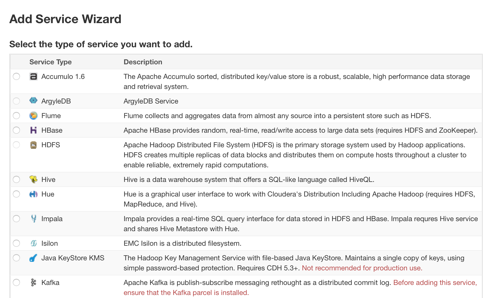
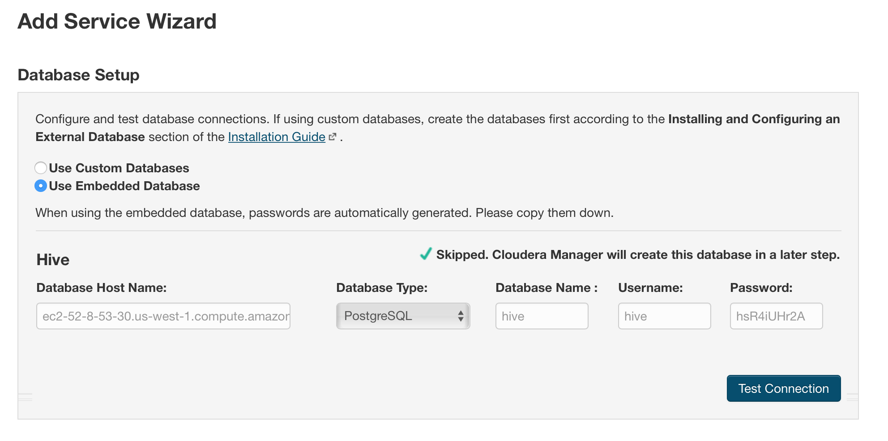
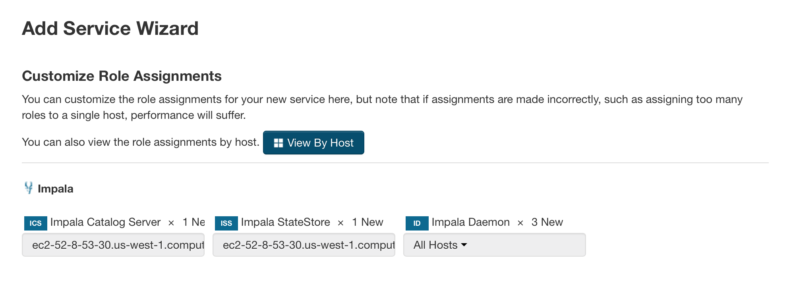
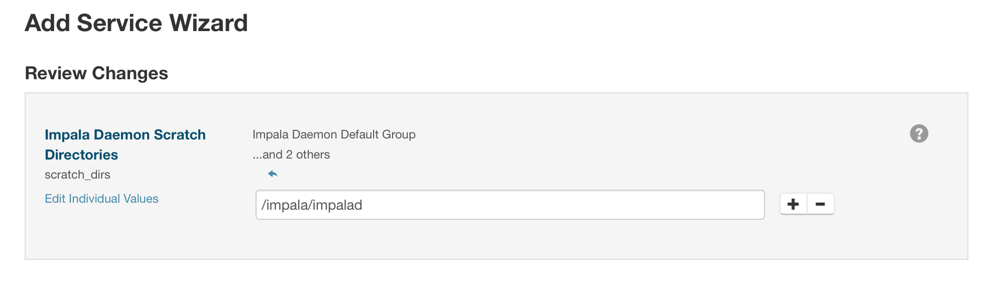

Cloudera 5.4 Service Configuration
Adding Cloudera services
Select on the arrow next to cluster name and select Add a Service per picture below
From list of services pick the service you want to add 
Adding the Flume service
Follow Adding Cloudera services above and select continue to accept defaults below
Select on Flume agent selection field and select hosts you want to have the agent on from the list of available hosts and select continue and finish
Adding the Hive service
Follow Adding Cloudera services above and select continue to accept defaults below
Select on Gateway, Hive Metastore Server, WebHcat Server, Hiveserver2 selection fields and select hosts you want to have Hive on from the list of available hosts and select continue.
Select Use Embedded database and select test connection then select continue 
Leave defaults below as is and select finish
Adding the Impala service
Follow Adding Cloudera services above and select continue to accept defaults below
Select on Impala Catalog Server, Impala Satatestore, Impala Daemon selection fields and select hosts you want to have Hive on from the list of available hosts and select continue. 
Leave defaults as is and select continue than finish 
Adding the ArgyleDB service
Follow Adding Cloudera services above and select continue to accept defaults below
Select on ArgyleDB Server, Redis Server selection fields and select hosts you want to have ArgyleDB on from the list of available hosts and select continue.
Add Redis server host if localhost set to local otherwise use FQDN name. Add Tableau REST API user. Add Tableau user password for rest apu user. Add api admin user
Add IPA admin user password. Add host IPA server. Add ipa cert path
Adding the IBIS service
Follow adding Cloudera services above and select continue to accept defaults below

Ignore the error during install